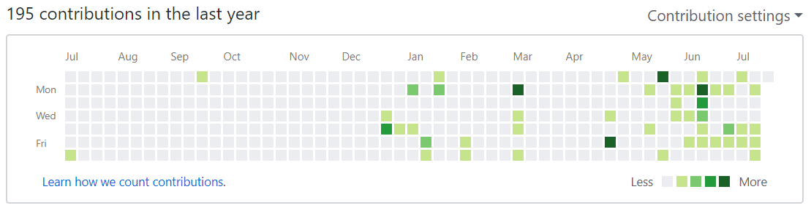

A Year of GitHub
July 16, 2018
A year ago, I joined GitHub. It’s not really an important anniversary, but in a way, it marks approximately one year since I started learning to code seriously. Git is one of the things I'm so glad to have picked up in the past year, so I’ll be going over some of my personal version control milestones in this blog post. I know I have yet to use Git and GitHub to their full potential, so this is a chance to look back at what I have learned and look ahead to what I hope to learn.

Looking at my contribution graph, there seems to be four distinct regions:
July 2017
I created a GitHub account with little understanding of version control. I thought GitHub was analogous to Google Drive, but you know, for code. I will eventually learn that there is so much more to this tool. The light green square in July 2017 marks my first attempt to create a repository. As you can guess, with my feeble understanding of Git, I did not get very far. I soon forgot about my first experiment with Git, and spent the rest of summer completing simple coding tutorials and projects, which did not really need version control anyways.
September 2017
The second green square was from Hack the North. My team was getting ready to submit our project for judging and we needed to create a GitHub repo to showcase our code. Working at 5:00 AM and running on 4 hours sleep, we couldn’t figure out how to do it. Thankfully, we ran into a hackathon mentor who walked us through the process of creating our first repo, but I admit I didn’t retain much of what he said due to lack of sleep. Again, I let Git fade from my memory and didn’t touch it again until months later.
December 2017 - March 2018
Over winter break I dug up some Stack Overflow posts and learned to use Git Bash. I also tried GitHub desktop and found the UI to be friendlier, so I ended up using this for a while to push code upstream. In this period of time, I created a simple Hangman console app with Java and refactored one of my old projects and pushed both to GitHub. I also built my personal website and hosted it with GitHub pages!
April 2018 - Present
I committed (pun intended) to learning about the Git workflow after my semester ended. At this point, I finally understood the collaborative power of Git! After watching Brad Traversy’s crash course on the subject (which I highly recommend by the way), I also gained the confidence to work with the Git command line. Throughout my co-op term, I’ve been getting very comfortable working with version control and I’ve made it my goal to use Git more effectively in my personal projects.
Over the next year, I’d like to:
- get in the habit of using branches to experiment with code
- get involved with some team projects
- work on projects more regularly (hoping there’s a lot more green on the graph this time next year!)
My First ASP.NET Web App
June 27, 2018
A little while ago, I created my first web app using C# and the ASP.NET framework. In this blog post, I’ll discuss my inspiration, development process, and future goals for this app. Note that this will be a more technical post.
At the end of April, I started as a Software Engineering Intern at SPS Commerce, a company whose development stack is predominantly Microsoft-based. Having only completed first-year computer science courses in C and Racket, I knew there would be a steep learning curve. Despite this, I was very excited to dive into coding. In my first week, I familiarized myself with object-oriented programming (OOP) and worked through several C# and .NET tutorials. Soon, my attention turned to ASP.NET - something my team works with extensively. ASP.NET is a server-side web framework that is part of the broader .NET framework. It uses IIS as web server and supports several programming models. Up until my internship, the only web development I’ve done was on static HTML and CSS pages, so the backend was a daunting new frontier I needed to tackle.
I’m a big believer in “learning-by-doing” when it comes to programming, so I decided to create a web application of some sort to prepare for work assignments. My key objectives were to:
- practice OOP by modeling tangible objects
- write server code to create a dynamic ASP.NET web page
- deploy my site to cloud
It took some time but the perfect idea came to me – Genetics Toolbox. After taking a genetics course last term, I realized that computers can easily perform a lot of the tasks we did in class. Three examples I thought of were:
- genetic code analysis – where students determine complementary strands, transcripts and peptide sequences given a starting sequence of DNA or RNA
- Hardy-Weinberg calculations - where a population’s genotypic frequency is predicted based on an assumed equilibrium in allelic frequencies
- gene-mapping - where distances between genes on a chromosome are determined through analysis of three-point-cross data
While my web app will eventually implement all of these tools, I decided to start with Genetic Code Tools.
I thought it would be pretty straightforward to model the science with OOP for Genetic Code Tools. The molecules involved are physical items with perceivable properties and well-defined operations that act on them. OOP seemed very well-suited for this. I created an abstract class called DnaStrand which consisted of general properties like base sequence, and functions to create complementary strands and transcripts. This class was inherited by TemplateStrand and CodingStrand, which are the actual classes to be instantiated. While all forms of DNA share common properties, template strands(3’ - 5’) and coding strands(5’ - 3’) behave differently based on their orientations. I loved that OOP could capture the relationship between these biological objects with inheritance and abstract classes. After I finished my class library, I threw together some unit tests to reassure myself that all my functions were working as expected. Overall, this stage of development went very smoothly.
Next came the challenge – creating the actual web application. I read up on Model-View-Controller (MVC) architecture and felt somewhat overwhelmed with all the new concepts presented. From what I gathered, MVC is a blueprint for how a web app operates, and it embodies the “separation of concerns” idea. The model, view, and controller refer to the business logic, UI, and request-handlers of an application respectively. I wasn’t confident in implementing MVC and needed to spend some quality time to figure it out. Meanwhile, I came across something awesome - Razor! Razor is a simple syntax used to create ASP.NET web pages that allows C# server code to be written inline with HTML. According an article from Stackify, Razor pages are more of a Model-View-ViewModel (MVVM) architecture than MVC, which makes two-way data binding simpler to achieve. Using Razor, I was able to quickly strap an UI onto my web app and have it display dynamic content from my C# code! (Looking back, my Razor page wasn’t very modularized, so the MVVM pattern wasn’t really evident. I’ll need to clean this up and refactor. However, since I’m currently learning about MVC, it’s most probable that I will re-architect this entire application).
With a working site running on my computer, the next step was to deploy and obtain an URL. I wanted to experiment with cloud and decided to publish with Microsoft Azure. For a free account, Azure’s App Service allows up to 10 apps. As well, Azure offers the benefit of a built-in workload in Visual Studio. The deployment process was well-documented on Microsoft Docs and I followed through to publish my site without a hitch…or so I thought. Excitedly, I tried to visit http://geneticstoolbox.azurewebsites.net, but was sent back “you do not have permission to view this directory or page”. 😮
...Turns out, it was caused by a missing startup file my web configurations file. The server was looking for the default index.cshtml file when in fact my startup was named differently. This was quickly patched up and finally, my site was up and running!
It was certainly an exciting few days on this project and going forward, there are a few things I’d like to do with Genetics Toolbox. The immediate next-step is to implement the other two tools that I had in mind. As I’ve mentioned previously, I also want to switch to MVC architecture. In the long-term, I’d like to look into creating a continuous integration and deployment pipeline. At the moment, I have local Git deployment set up, which allows me to push changes to Azure from the Git command line on my computer. Eventually, I want to automate this process so that changes I push to GitHub will automatically trigger deployment to Azure. VSTS may be a good tool for this.
Thanks for following along my development journey and be sure to check out Genetics Toolbox!
Dear Bayview IB Class of 2018: Reflections of a Grad, One Year Later
June 25, 2018
This post contains my reflections about IB, a high school program that I completed at Bayview Secondary School. It is written as an open letter to this year’s graduating students, and in the spirit of this, I did not include explanations for some of the terms used. However, there is a quick glossary on the lingo at the end of this post.
Congratulations, you made it.
A year later, I can still recall the sense of relief and feelings of joy when I walked out of my final exam. Many of you are probably more than ready to put IB behind you, as you look ahead to travelling in your extended summer, or going on to post-secondary studies in the fall. Relish these few months to be carefree, you’ve earned it.
In the past year, my thoughts often wandered back to memories of IB and Bayview. I’ve put off writing about them, but now's as good a time as any to do it.
Perhaps for some, IB was a terrible ordeal to have gone through. For others, it may have been nothing more than the means to get grades necessary for competitive universities. Maybe for a minority, the whole experience was a walk in the park. Whatever the case, I don’t intend to sway you one way or another. Each of our experiences were unique. However, I do think there are lessons to be drawn out of them no matter what.
1) Content-wise, what I learned in IB is not remotely relevant to what I study now. But I don’t regret choosing IB (and not just because of conversions).
Conversions were awesome. It could even be argued that they were unjustified for SL courses. Admittedly, they were helpful for university admissions and scholarships, but they were not the most important things I took away from high school.
Sometime during my first term at Waterloo, I was asked by a friend (incidentally, a fellow IB grad and computer science student) if I regret doing IB. I think the question was motivated by the fact that many of our peers come from strong math and CS backgrounds, which would have been impossible obtain in Bayview’s IB program. The unavailability of IB computer science and the lack of electives made it difficult to gain exposure CS; furthermore, SL math did not adequately set us up for my first-year courses. Despite this, my answer to the question was no, I certainly do not regret my IB experience.
As with most people, I have my likes and dislikes when it comes to classes. However, IB instilled in me an appreciation for my unfavoured courses and the challenges that came with them. As well, it also solidified my enthusiasm towards the subjects I did enjoy. Most importantly, it made me a better thinker. I believe all of this was the result of the IB philosophy and the structure of the program.
A big idea behind IB is the shaping of well-rounded individuals, and because of this, we took arts, humanities, and STEM courses throughout high school. The mandatory subject-areas were split across six multi-semester courses in the two senior years, with TOK added on. This structure not only ensured that we had exposure to a wide-range of disciplines, but also allowed us to explore each subject in-depth.
I was never a big fan of English class and it was probably the course I struggled most with in the first few years of high school. Naturally, I was terrified of HL English, which spanned three semesters in grades 11 and 12 and heavily involved analysis of 20th century literature. However, after grinding through countless commentaries, essays and presentations, I was surprised to discover that I became could appreciate the works of Lispector, Dickinson and Stoppard (some of the toughest writers we encountered). I’m still not someone who’d pick up a post-modern work to read for fun, but I’m grateful that IB English changed my attitude towards literature. It’s no secret that we tend to like things that we’re good at; IB challenged me to become better at English, so and I came to enjoy it more. The same can be said for subjects I was originally keen in. As a result, I left high school with a solid understanding of, and genuine interest in each of my senior courses.
The exact part of IB that builds interest and skill across all disciplines is its investigative learning model. We had IAs in nearly every course, which were self-directed projects that were usually research-based and analytical in nature. The EE and TOK requirements were similar in this regard. As tough as they were at times, these assignments provided the most valuable learning opportunities for me. What better way to understand mechanics than to design and perform your own experiment to derive a kinematic relationship? And what better way to learn about Cold War historiographic debate than to weigh-in your own unique arguments? These sorts of assignments pushed me to exercise critical thinking and to apply theoretical-knowledge to see my projects through from start to finish.
Of course, IB is not without shortcomings. In a world where we’re expected to choose a specialty for university, it can feel that we’re put at a disadvantage if we’re not given the opportunity to do so in high school. I’d like to spin this another way though: since we’ll all inevitably specialize in an area, why not gain some quality exposure to everything in high school?
2) Persevere, and you might be surprised where you end up.
Several times in the past year, my conversations with fellow graduates involved remarks on how easy IB seems in retrospect.
The thing is, it’s not fair to discount our past struggles. It’s important to note that IB was one of the most challenging things we went through until that point in our lives. But the same goes for any of our current challenges. They are the hardest thing we ever faced until the moment they’re overcome. And they will certainly be overcome, because we get better at whatever we do with time.
Even though the latter years of IB had a lot more stressful events, it went uphill for me. I learned a lot along the way and it became relatively easier to handle school. I would say the difficulty of IB grew logarithmically with time. The takeaway here is that if we choose to face a growing challenge, the perceived difficulty will decrease with time and dedication. This is what I choose to tell myself about university.
3) Appreciate people and experiences.
I’ve had the privilege to be surrounded by a supportive group of friends, peers, and teachers throughout high school. It’s sometimes overlooked, but an add-on to IB at Bayview was the amount of time we spent with our cohort. The selection of IB courses meant that we consistently shared classes with the same people and were consistently taught by the same teachers. The community that came out of this is one that readily offers help to one another. On the night before a chem test, we could count on someone to answer our pressing questions about hybridization. As well, our teachers often tried to be accommodating, doing their best to avoid piling multiple assignment deadlines on the same day. For most university programs, this is an unrealistic expectation. When I reminisce about high school, I am grateful for the support that I had there.
Lastly, high school is not forever. The good and bad all pass by, merging into memories that cause a lot of nostalgia. I think no matter what, we always come to appreciate some aspects of the past. With this in mind, it’s important to absorb all our experiences as we live them so we can reflect on them in retrospect. In the meantime, while it’s healthy to look ahead to the future, I like to hang on to the past for a bit, appreciating the good times.
Conversions - IB courses are graded on a 7-point scale, but are converted to a percentage based on a scale established by Ontario school boards. Conversions are usually considered to be quite generous.
Higher Level (HL) & Standard Level (SL) – There are two types of IB courses, Higher Levels span 3 semesters while Standard Levels span 2. At Bayview, students took 3 of each type.
Theory of Knowledge (TOK) – An IB requirement to study epistemology. At Bayview, this requirement was fulfilled through a course that covered epistemology in addition to several other branches of philosophy.
Extended Essay (EE) – A 3000-4000-word essay that each IB student completes on a topic beyond the curriculum.
Internal Assessment (IA) – An investigative paper graded internally. They vary in format depending on the subject (experiment design/analysis for sciences, research essays for humanities, etc.).
The Not-So-Trivial Experiences of a Trivia Enthusiast
March 6, 2018
One of the most important things I believe in is the value of being a lifelong learner. Not only does it broaden our horizons, but it also gives us a drive to accomplish more. Part of what inspired me to begin blogging was the opportunity it’d give me to share new things I learn regularly—holding me accountable to actively synthesize new information I come across. In the near future, I hope to have a collection of posts up, highlighting interesting takeaways from anything between my coursework, leisure readings, or life experiences.
What sparked my aspirations to be a lifelong learner? Quiz bowl.
For those who are unfamiliar, quiz bowl is an academic trivia game. Popular variants include Reach for the Top, University Challenge, and History Bowl. The gist of the game is to buzz-in and answer questions for your team on a variety of subjects with high speed and accuracy. Topics range from science, to humanities, to fine arts. I was extensively involved with quiz bowl in high school and it was a wonderful experience.
Wow, that sounds like blind memorization of useless facts.
I’ve heard this many times, and I can see where you’re coming from. It’s true that there can be quite a bit of memorization when preparing for a tournament, and that’s certainly not meaningful learning. But hear me out on why I think there’s a lot more to quiz bowl.
First off, I’ve never liked referring to quiz bowl as trivia, because I don’t think the content is at all trivial. There are other games that may ask “what’s the height of Mount Kilimanjaro?” or “when was the element seaborgium discovered?”, and knowing their answers probably won’t enrich your life in any way. But quiz bowl is not built on your ability to recall specific numbers, somebody’s middle name, or some wild world records. Instead, questions are usually several sentences long, and laid out in a pyramid structure, beginning with lesser known clues and building towards a big giveaway. A question on the Paris Peace Conference might reference the resulting decades of tumultuous Middle Eastern geopolitics and German perceptions of a diktat before finishing off with “name this diplomatic gathering that saw the signing of the Treaty of Versailles”. In this way, quiz bowl encourages a much deeper level of learning. When studying up on famous wars or notable literary works, you will invariably be sucked into reading more about the historical implications of an event, or the stylistic markers of an art movement. This is what I appreciate the most about the quiz bowl community—when someone buzzes in, you know that they’ve poured in hours their own time to really understand a topic.
Personally, I delved a lot into Tudor England from studying medieval history for tournaments. I’d known about Henry VIII’s infamous divorce and how it caused a religious reformation, but it was in-depth reading that revealed how the establishment of the Church of England also served as a way for King Henry to consolidate his power in a recently war-torn kingdom. This revealed interesting parallels between Henry VIII and the 20th century autocrats in terms of their usage of religion to acquire and maintain power—an insight I probably would’ve never gained had it not been for quiz bowl.
The point is, I think one of the greatest things about quiz bowl is the self-motivation it develops. It certainly prompted me to look for learning opportunities in all aspects of my life, be it picking up a new software framework, language, or even a piano piece.
Finally, while quiz bowl taught me an important lesson, I won’t deny a large part of my love for the game is simply because…it’s fun! So give it a try if you ever get the chance, there’s no comparison to the rush of adrenaline when a speedy press of a buzzer clutches a win for your team!